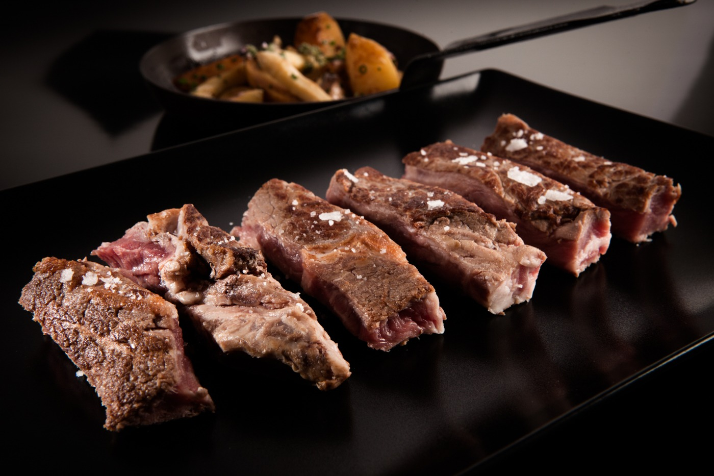

Entrecot
En esta sección encontrarás una variedad de platos calientes para disfrutar en cualquier momento del día.
Te vamos a explicar como hacer paso a paso este plato

Ingredientes:
- 2 entrecots de ternera (aproximadamente 200-250 gramos cada uno)
- Sal gruesa al gusto
- Pimienta negra recién molida al gusto
- 2 cucharadas de aceite de oliva
- 2 dientes de ajo, picados (opcional)
- 1 ramita de romero fresco (opcional)
Instrucciones:
- Saca los entrecots del refrigerador y déjalos reposar a temperatura ambiente durante unos 30 minutos antes de cocinarlos. Esto ayudará a que se cocinen de manera más uniforme.
- Precalienta una sartén grande a fuego medio-alto. Asegúrate de que la sartén esté bien caliente antes de agregar el aceite.
- Agrega el aceite de oliva a la sartén y caliéntalo durante unos segundos. Si deseas, puedes añadir los dientes de ajo picados y la ramita de romero para darle un sabor adicional al aceite.
- Sazona los entrecots generosamente con sal gruesa y pimienta negra recién molida por ambos lados.
- Coloca los entrecots en la sartén caliente y cocínalos durante aproximadamente 3-4 minutos por cada lado para obtener un punto medio (medium rare). Ajusta el tiempo de cocción según tu preferencia: menos tiempo para un punto más crudo (rare) o más tiempo para un punto más cocido (medium well o well done).
- Una vez que los entrecots estén cocidos a tu gusto, retíralos de la sartén y déjalos reposar durante unos 5 minutos antes de cortarlos. Esto permitirá que los jugos se redistribuyan y el resultado final sea más jugoso.
- Corta los entrecots en rodajas finas contra la fibra de la carne para obtener una textura más tierna. Sirve caliente acompañado de tus guarniciones favoritas, como patatas asadas, verduras al vapor o una ensalada fresca.
Volver al plato anterior
Siguiente Plato Caliente